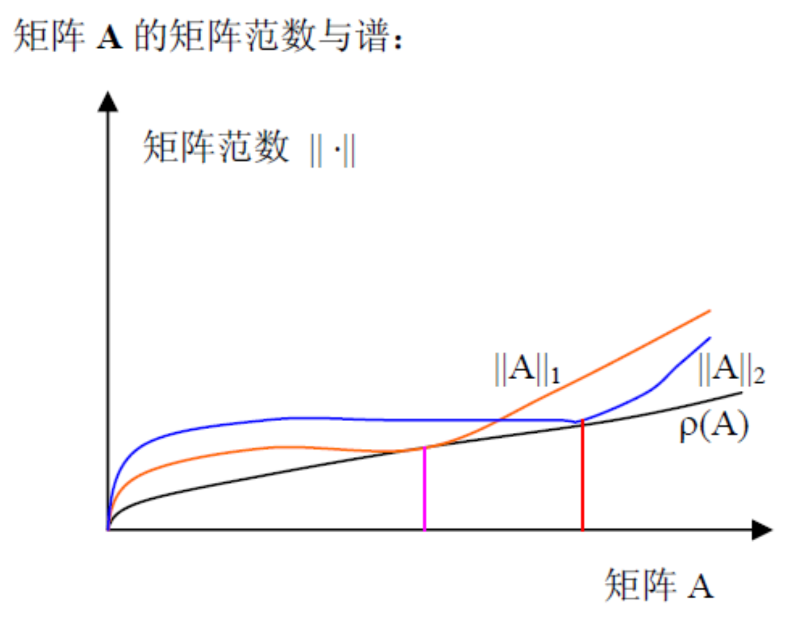

[矩阵论]2.2矩阵范数
\[ \newcommand\norm[1]{\Vert#1\Vert} \]
矩阵范数
广义矩阵范数：与向量范数相同，满足 3 条性质：
- 非负性：\(\norm{A}\geq 0\) 且 \(\norm{A}=0\iff A=0\)
- 齐次性：\(\norm{kA}=|k|\norm{A},\,k\in K\)
- 三角不等式：\(\norm{A+B}\leq\norm{A}+\norm{B}\)
矩阵范数：在广义矩阵范数的基础上增加相容条件：
- 相容性：\(\norm{AB}\leq\norm{A}\norm{B}\)
对于涉及到矩阵范数的不等式放缩，一般就是考虑三角不等式和相容性。
相容范数
对 \(\mathbb C^{m\times n}\) 上的矩阵范数 \(\norm{A}_M\) 和 \(\mathbb C^m,\mathbb C^n\) 上的同类向量范数 \(\norm{x}_v\)，若： \[ \norm{Ax}_v\leq \norm{A}_M\norm{x}_v,\quad \forall A\in\mathbb C^{m\times n},\,\forall x\in\mathbb C^n \] 则称矩阵范数 \(\norm{A}_M\) 与向量范数 \(\norm{x}_v\) 是相容的。
简单地说，把矩阵视作线性映射，则相容范数表示，映射后的向量与原向量的长度的相对变化量被矩阵范数所控制。
\(m_1\) 范数
设 \(A\in\mathbb C^{m\times n}\)，矩阵的 \(m_1\) 范数与向量的 1-范数定义类似： \[ \norm{A}_{m_1}=\sum_{i=1}^m\sum_{j=1}^n|a_{ij}| \] 即所有元素的绝对值（模）之和。可以证明 \(m_1\) 范数是矩阵范数，并且与向量的 1-范数相容。
证明：非负性、齐次性和三角不等式与向量的 1-范数完全相同，必然成立，只需证明矩阵的相容性以及与向量 1-范数的相容性。
相容性： \[\begin{align}\norm{AB}_{m_1}&=\sum_{i=1}^m\sum_{j=1}^l\left|\sum_{k=1}^na_{ik}b_{kj}\right|\\&\leq\sum_{i=1}^m\sum_{j=1}^l\sum_{k=1}^n|a_{ik}||b_{kj}|\\&\leq\sum_{k=1}^n\left[\left(\sum_{i=1}^m|a_{ik}|\right)\left(\sum_{j=1}^l|b_{kj}|\right)\right]\\&\leq\left(\sum_{k=1}^n\sum_{i=1}^m|a_{ik}|\right)\left(\sum_{k=1}^n\sum_{j=1}^l|b_{kj}|\right)\\&=\norm{A}_{m_1}\norm{B}_{m_1}\end{align}\] 与向量的 1-范数相容： \[\begin{align}\norm{Ax}_1&=\sum_{i=1}^m\left|\sum_{j=1}^na_{ij}x_j\right|\\&\leq\sum_{i=1}^m\sum_{j=1}^n|a_{ij}||x_j|\\&\leq\left(\sum_{i=1}^m\sum_{j=1}^n|a_{ij}|\right)\left(\sum_{j=1}^n|x_j|\right)\\&=\norm{A}_{m_1}\norm{x}_1\end{align}\] 证毕。
\(m_\infty\) 范数
设 \(A\in\mathbb C^{m\times n}\)，矩阵的 \(m_\infty\) 范数与向量的无穷范数定义类似，但是要乘以 \(n\)，否则不满足相容性： \[ \norm{A}_{m_\infty}=n\cdot\max_{i,j}|a_{ij}| \] 可以证明 \(m_\infty\) 范数是矩阵范数，且与向量的无穷范数相容。
证明：相容性： \[\begin{align}\norm{AB}_{m_\infty}&=n\cdot\max_{i,j}\left|\sum_{k=1}^n a_{ik}b_{kj}\right|\\&\leq n\cdot\max_{i,j}\sum_{k=1}^n |a_{ik}||b_{kj}|\\&\leq n\cdot\max_{i,j}\left[n\cdot(\max_k |a_{ik}|)(\max_k |b_{kj}|)\right]\\&=\max_{i,j}\left[(n\cdot \max_k |a_{ik}|)(n\cdot\max_k |b_{kj}|)\right]\\&=(n\cdot \max_{i,k} |a_{ik}|)(n\cdot\max_{k,j} |b_{kj}|)\\&=\norm{A}_{m_\infty}\norm{B}_{m_\infty}\end{align}\] 与向量的无穷范数相容： \[\begin{align}\norm{Ax}_{\infty}&=\max_i\left|\sum_{j=1}^na_{ij}x_j\right|\\&\leq\max_i\sum_{j=1}^n|a_{ij}||x_j|\\&\leq\max_i\left[n\cdot(\max_j |a_{ij}|)(\max_j |x_j|)\right]\\&=n\cdot\max_{i,j}|a_{ij}|\cdot\max_j |x_j|\\&=\norm{A}_{m_\infty}\norm{x}_{\infty}\end{align}\] 证毕。
Frobenius 范数
设 \(A\in\mathbb C^{m\times n}\)，矩阵的 F-范数与向量的 2-范数定义类似： \[ \norm{A}_{F}=\norm{A}_{m_2}=\left(\sum_{i=1}^m\sum_{j=1}^n|a_{ij}|^2\right)^{1/2}=\left(\text{tr}(A^HA)\right)^{1/2} \] 可以证明 F-范数是矩阵范数，并且与向量的 2-范数相容。
证明：相容性： \[\begin{align}\norm{AB}_F^2&=\sum_{i=1}^m\sum_{j=1}^l\left|\sum_{k=1}^na_{ik}b_{kj}\right|^2\\&\leq\sum_{i=1}^m\sum_{j=1}^l\left(\sum_{k=1}^n|a_{ik}||b_{kj}|\right)^2\\&\leq\sum_{i=1}^m\sum_{j=1}^l\left(\sum_{k=1}^n|a_{ik}|\right)^2\left(\sum_{k=1}^n|b_{kj}|\right)^2\\&\leq\left(\sum_{i=1}^m\sum_{k=1}^n|a_{ik}|\right)^2\left(\sum_{j=1}^l\sum_{k=1}^n|b_{kj}|\right)^2\\&=\norm{A}_F^2\norm{B}_F^2\end{align}\] 与向量的 2-范数相容： \[\begin{align}\norm{Ax}_2^2&=\sum_{i=1}^m\left|\sum_{j=1}^n a_{ij}x_j\right|^2\\&\leq\sum_{i=1}^m\left(\sum_{j=1}^n |a_{ij}||x_j|\right)^2\\&\leq\sum_{i=1}^m\left(\sum_{j=1}^n |a_{ij}|\right)^2\left(\sum_{j=1}^n|x_j|\right)^2\\&\leq\left(\sum_{i=1}^m\sum_{j=1}^n |a_{ij}|\right)^2\left(\sum_{j=1}^n|x_j|\right)^2\\&=\norm{A}_F^2\norm{x}_2^2\end{align}\] 证毕。
定理（Frobenius 范数的酉不变性）：设 \(A\in\mathbb C^{m\times n}\)，酉矩阵 \(P\in\mathbb C^{m\times n},\,Q\in\mathbb C^{n\times n}\)，则： \[ \norm{PA}_F=\norm{A}_F=\norm{AQ}_F \]
证明： \[\begin{align}&\norm{PA}_F^2=\text{tr}\left((PA)^H(PA)\right)=\text{tr}\left(A^HP^HPA\right)=\text{tr}\left(A^HA\right)=\norm{A}_F^2\\&\norm{AQ}_F^2=\text{tr}\left((AQ)^H(AQ)\right)=\text{tr}\left(Q^HA^HAQ\right)=\text{tr}\left(A^HQ^HQA\right)=\text{tr}\left(A^HA\right)=\norm{A}_F^2\end{align}\] 证毕。
注：用到了 \(\text{tr}(AB)=\text{tr}(BA)\).
推论：矩阵的 F-范数等于所有奇异值平方和开根，即： \[ \norm{A}_F=\left(\sigma_1^2+\cdots+\sigma_r^2\right)^{1/2} \]
根据奇异值分解和酉不变性易证。
性质：转置和共轭都不改变矩阵的 F-范数，即： \[ \norm{A}_F=\norm{A^T}_F=\norm{\bar A}_F=\norm{A^H}_F \]
定理：存在相容的向量范数
对于 \(\mathbb C^{m\times n}\) 上的矩阵范数 \(\norm{A}\)，存在向量范数 \(\norm{x}_v\)，使得 \(\norm{Ax}_v\leq\norm{A}\norm{x}_v\).
证明：任取非零向量 \(y\in\mathbb C^n\)，按如下方式构造向量范数即可： \[\norm{x}_v=\norm{xy^H}\] 首先由于它是由矩阵范数定义的，所以必然满足向量范数的 3 条性质，即确实是一个向量范数。
其次证明相容性： \[\norm{Ax}_v=\norm{Axy^H}\leq\norm{A}\norm{xy^H}=\norm{A}\norm{x}_v\] 证毕。
从属范数
定义
已知 \(\mathbb C^m\) 和 \(\mathbb C^n\) 上的同类向量范数 \(\norm{x}_v\)，设 \(A\in\mathbb C^{m\times n}\)，定义函数： \[ \norm{A}=\max_{\norm{x}_v=1}\norm{Ax}_v=\max_{x\neq 0}\frac{\norm{Ax}_v}{\norm{x}_v} \] 则 \(\norm{A}\) 是矩阵范数，且与 \(\norm{x}_v\) 相容。
证明：
非负性：若 \(A\neq0\)，则存在 \(x_0\) 满足 \(\norm{x_0}_v=1\) 且 \(Ax_0\neq 0\)，于是： \[\norm{A}\geq\norm{Ax_0}_v>0\] 若 \(A=0\)，则： \[\norm{A}=\max_{\norm{x}_v=1}\norm{Ax}_v=\max_{\norm{x}_v=1}\norm{0}_v=0\]
齐次性： \[\norm{kA}=\max_{\norm{x}_v=1}\norm{kAx}_v=k\cdot\max_{\norm{x}_v=1}\norm{Ax}_v=k\norm{A}\]
三角不等式： \[\begin{align}\norm{A+B}&=\max_{\norm{x}_v=1}\norm{(A+B)x}_v\leq\max_{\norm{x}_v=1}(\norm{Ax}_v+\norm{Bx}_v)\\&\leq\max_{\norm{x}_v=1}\norm{Ax}_v+\max_{\norm{x}_v=1}\norm{Bx}_v=\norm{A}+\norm{B}\\\end{align}\]
与 \(\norm{x}_v\) 的相容：若 \(x=0\) 显然成立；若 \(x\neq 0\)，设 \(x_0=x/\norm{x}_v\)，则： \[\norm{Ax_0}_v\leq\max_{\norm{x}_v=1}\norm{Ax}_v=\norm{A}\] 故： \[\norm{Ax}_v=\big\Vert{A(\norm{x}_v\cdot x_0)}\big\Vert=\norm{Ax_0}\norm{x}_v\leq\norm{A}\norm{x}_v\]
相容性： \[\norm{AB}=\max_{\norm{x}_v=1}\norm{ABx}_v=\norm{A(Bx^\ast)}_v\leq\norm{A}\norm{Bx^\ast}_v\leq\norm{A}\norm{B}\] 其中，\(x^\ast\) 是使得 \(\norm{ABx}_v\) 取到最大值的单位向量。
特点：从属范数一定有 \(\norm{I}=1\)，但一般的矩阵范数并不一定 ，例如 \(\norm{I}_{m_1}=n,\,\norm{I}_F=\sqrt{n}\).
1-范数（列范数）
由向量的 1-范数诱导出的矩阵范数： \[ \norm{A}_1=\max_{j}\sum_{i=1}^m|a_{ij}| \] 即对各列的元素求绝对值（模）的和，选最大的和。
证明：记 \(t=\max_{j}\sum_{i=1}^m|a_{ij}|\)，我们只需要证明 \(\norm{A}_1\leq t\) 且 \(\norm{A}_1\geq t\) 即可。
首先，设 \(x\in\mathbb C^n\) 且 \(\norm{x}_1=1\)，则： \[\begin{align}\norm{Ax}_1&=\sum_{i=1}^m\left|\sum_{j=1}^na_{ij}x_j\right|\\&\leq\sum_{i=1}^m\sum_{j=1}^n|a_{ij}||x_j|\\&=\sum_{j=1}^n\left(|x_j|\cdot\sum_{i=1}^m|a_{ij}|\right)\\&\leq\sum_{j=1}^n\left(|x_j|\cdot t\right)=t\cdot\norm{x}_1=t\end{align}\] 由于上式对任意长度为 1 的 \(x\) 都成立，因此 \(\norm{A}_1\leq t\).
其次，设 \(k=\mathop{\text{argmax }}_{j}\sum_{i=1}^m|a_{ij}|\)，即 \(t=\sum_{i=1}^m|a_{ik}|\)；再设 \(e_k=(0,\ldots,1,\ldots,0)^T\)，则： \[\norm{A}_1\geq\norm{Ae_k}_1=\sum_{i=1}^m|a_{ik}|=t\] 综上，\(\norm{A}_1=t\). 证毕。
无穷范数（行范数）
由向量的无穷范数诱导出的矩阵范数： \[ \norm{A}_\infty=\max_i\sum_{j=1}^n|a_{ij}| \] 即对各行的元素求绝对值（模）的和，选最大的和。
证明：记 \(t=\max_{i}\sum_{j=1}^n|a_{ij}|\)，我们只需要证明 \(\norm{A}_\infty\leq t\) 且 \(\norm{A}_\infty\geq t\) 即可。
首先，设 \(x\in\mathbb C^n\) 且 \(\norm{x}_\infty=1\)，则 \(|x_j|\leq 1\)，于是： \[\begin{align}\norm{Ax}_\infty&=\max_{i=1}^m\left|\sum_{j=1}^na_{ij}x_j\right|\\&\leq\max_{i=1}^m\sum_{j=1}^n|a_{ij}||x_j|\\&\leq\max_{i=1}^m\sum_{j=1}^n|a_{ij}|=t\end{align}\] 由于上式对任意长度为 1 的 \(x\) 都成立，因此 \(\norm{A}_\infty\leq t\).
其次，设 \(\mathbf1=(1,\ldots,1)^T\)，则： \[\norm{A}_\infty\geq\norm{A\mathbf1}_\infty=\max_{i=1}^m\sum_{j=1}^n|a_{ij}|=t\] 综上 \(\norm{A}_\infty=t\). 证毕。
2-范数（谱范数）
由向量的 2-范数诱导出的矩阵范数： \[ \norm{A}_2=\max_j\sqrt{\lambda_j(A^HA)}=\sigma_1 \] 即 \(A\) 的最大奇异值。
证明：设 \(A\) 的奇异值分解为 \(A=U\Sigma V^H\)，其中 \(U,V\) 都是酉矩阵。则： \[\begin{align}\norm{A}_2&=\max_{x\neq 0}\frac{\norm{Ax}_2}{\norm{x}_2}=\max_{x\neq 0}\frac{\norm{U\Sigma V^Hx}_2}{\norm{x}_2}=\max_{x\neq 0}\frac{\norm{\Sigma V^Hx}_2}{\norm{V^Hx}_2}\\&=\max_{y\neq 0}\frac{\norm{\Sigma y}_2}{\norm{y}_2}=\max_{\norm{y}_2=1}\norm{\Sigma y}_2=\max_{\norm{y}_2=1}\left(\sum_{i=1}^ny_i^2\sigma_i^2\right)^{1/2}\end{align}\] 显然当 \(y=(1,0,\ldots,0)^T\) 时上式取到最大值 \(\sigma_1\). 证毕。
定理（谱范数的酉不变性）：设 \(A\in\mathbb C^{m\times n}\)，酉矩阵 \(P\in\mathbb C^{m\times n},\,Q\in\mathbb C^{n\times n}\)，则： \[ \norm{PA}_2=\norm{A}_2=\norm{AQ}_2 \]
由于酉变换不改变矩阵的奇异值，因此谱范数是酉不变范数。
范数的应用
逆矩阵的扰动分析
定理：设有 \(\mathbb C^{n\times n}\) 上的矩阵范数 \(\norm\cdot\)，若矩阵 \(A\in\mathbb C^{n\times n}\) 满足： \[ \norm{A}<1 \] 则 \(I-A\) 非奇异，且： \[ \begin{align} &\norm{(I-A)^{-1}}\leq\frac{\norm{I}}{1-\norm{A}}\\ &\norm{I-(I-A)^{-1}}\leq\frac{\norm{A}}{1-\norm{A}} \end{align} \]
证明：
(1). 选取与 \(\norm{A}\) 相容的向量范数 \(\norm{x}_v\)（根据前文的定理，一定存在这样的向量范数）。假设 \(\det(I-A)=0\)，则取 \(x_0\in N(I-A)\)，有： \[(I-A)x_0=0\implies x_0=Ax_0\implies\norm{x_0}_v=\norm{Ax_0}_v\leq\norm{A}\norm{x_0}_v<\norm{x_0}_v\] 因此假设不成立，故 \(I-A\) 非奇异。
(2). \[\begin{align}(I-A)^{-1}(I-A)=I&\implies(I-A)^{-1}=I+(I-A)^{-1}A\\&\implies\norm{(I-A)^{-1}}\leq\norm{I}+\norm{(I-A)^{-1}A}\\&\implies\norm{(I-A)^{-1}}\leq\norm{I}+\norm{(I-A)^{-1}}\norm{A}\\&\implies\norm{(I-A)^{-1}}\leq\frac{\norm{I}}{1-\norm{A}}\\\end{align}\] (3). \[\begin{align}(I-A)-I=-A&\implies I-(I-A)^{-1}=-A(I-A)^{-1}\\&\implies A-A(I-A)^{-1}=-A^2(I-A)^{-1}\\&\implies A(I-A)^{-1}=A+A^2(I-A)^{-1}\\&\implies\norm{A(I-A)^{-1}}\leq\norm{A}+\norm{A}\norm{A(I-A)^{-1}}\\&\implies\norm{A(I-A)^{-1}}\leq\frac{\norm{A}}{1-\norm{A}}\\&\implies\norm{I-(I-A)^{-1}}=\norm{-A(I-A)^{-1}}\leq\frac{\norm{A}}{1-\norm{A}}\end{align}\] 证毕。
注：(2)、(3) 的证明思路可以从后往前推。
条件数：设 \(A\in\mathbb C^{n\times n}\) 可逆，其条件数定义为： \[ \text{cond}(A)=\norm{A}\norm{A^{-1}} \] 条件数反映了 \(A^{-1}\) 对扰动的敏感程度。例如，设有线性方程组 \(Ax=b\)，其扰动解满足： \[ (A+\delta A)(x+\delta x)=b+\delta b \] 那么： \[ Ax+\delta A\cdot x+A\cdot \delta x+\delta A\cdot \delta x=b+\delta b\implies \delta A\cdot x+A\cdot \delta x\approx\delta b \] 故： \[ \delta x=A^{-1}\delta b-A^{-1}\delta A\cdot x \] 两边取范数并放大： \[ \begin{align} \norm{\delta x}&=\norm{A^{-1}\delta b-A^{-1}\delta A\cdot x}\\ &\leq\norm{A^{-1}\delta b}+\norm{A^{-1}\delta A\cdot x}\\ &\leq\norm{A^{-1}}\norm{\delta b}+\norm{A^{-1}}\norm{\delta A}\norm{x} \end{align} \] 再根据 \(\norm{A}\norm{x}\geq\norm{b}\)，于是： \[ \begin{align} \frac{\norm{\delta x}}{\norm{x}}&\leq\frac{\norm{A^{-1}}\norm{\delta b}}{\norm{x}}+\norm{A^{-1}}\norm{\delta A}\\ &\leq\norm{A}\norm{A^{-1}}\frac{\norm{\delta b}}{\norm{b}}+\norm{A}\norm{A^{-1}}\frac{\norm{\delta A}}{\norm{A}}\\ &=\text{cond}(A)\left(\frac{\norm{\delta b}}{\norm{b}}+\frac{\norm{\delta A}}{\norm{A}}\right) \end{align} \] 也就是说，解的相对扰动被输入 \(A,b\) 的相对扰动和条件数控制。如果 \(A\) 的条件数很大，那么解的误差就会很大。
谱半径及其性质
谱半径：设 \(A\in\mathbb C^{n\times n}\) 的特征值为 \(\lambda_1,\ldots,\lambda_n\)，则谱半径定义为： \[ \rho(A)=\max_i|\lambda_i| \] 谱半径是矩阵范数的下确界：设 \(A\in\mathbb C^{n\times n}\)，则对任意一种矩阵范数都有： \[ \rho(A)\leq\norm{A} \] 而对任意 \(\epsilon>0\)，必然存在某种矩阵范数，使得： \[ \norm{A}\leq \rho(A)+\epsilon \]
证明：
首先证明第一个关系式。设 \(\lambda\) 为 \(A\) 的特征值，\(x\) 为对应特征向量，\(\norm{\cdot}_v\) 为与 \(\norm{A}\) 相容的向量范数，则： \[|\lambda|\norm{x}_v=\norm{\lambda x}_v=\norm{Ax}_v\leq\norm{A}\norm{x}_v\implies |\lambda|\leq\norm{A}\] 于是： \[\rho(A)=\max_i|\lambda_i|\leq\norm{A}\] 然后证明第二个关系式。将 \(A\) 相似变换为 Jordan 标准形，即存在 \(P\in\mathbb C^{n\times n}\)，使得： \[P^{-1}AP=\Lambda+\tilde I=\text{diag}(\lambda_1,\ldots,\lambda_n)+\begin{bmatrix}0&\delta_1&&&\\&0&\delta_2&&\\&&\ddots&\ddots&\\&&&0&\delta_{n-1}\\&&&&0\end{bmatrix}\] 其中 \(\delta_i\) 为 0 或 1. 构造对角矩阵 \(D=\text{diag}(1,\epsilon,\ldots,\epsilon^{n-1})\)，设 \(S=PD\)，则： \[S^{-1}AS=D^{-1}P^{-1}APD=D^{-1}(\Lambda+\tilde I)D=\Lambda+D^{-1}\tilde ID=\Lambda+\epsilon\tilde I\] 于是： \[\norm{S^{-1}AS}_1\leq\norm{\Lambda}_1+\epsilon\norm{\tilde I}_1\leq\rho(A)+\epsilon\] 因此，构造矩阵范数： \[\norm{A}_M=\norm{S^{-1}AS}_1\] 即可满足 \(\norm{A}_M\leq\rho(A)+\epsilon\). 证毕。
值得注意的是，上述构造的范数与矩阵 \(A\) 有关，实际上不存在这样的矩阵范数对任意矩阵都成立。
上述关系也可以表述为： \[ \rho(A)=\inf_\alpha\norm{A}_\alpha \] 可视化：
